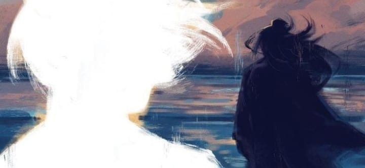

Origem do Canal
No dia 06 de novembro de 2024 nasce o canal chamado "Refúgio dos Problématicos", fundado inicialmente pelo Nychillas castiely, que o propio sempre tinha em mente varios problémas dos quais queria compartilhar com outras pessoas e expressar a sua grande habilidade em criar poesias baseadas em grandes poetas como Carlos drummond de Andrade, William Shakespeare e entre outros pelos quais o fizeram despertar a paixão pela poesia.
Doque o assunto se trata?
"Refúgio dos Problématicos" nada mais é que um canal vindo do WhatsApp, que disponibiliza poesias para aqueles que estão passando por momentos angústiantes na sua singela e simples vida. De uma maneira que gere uma auto analize interna e externa das coisas que o preenchem.